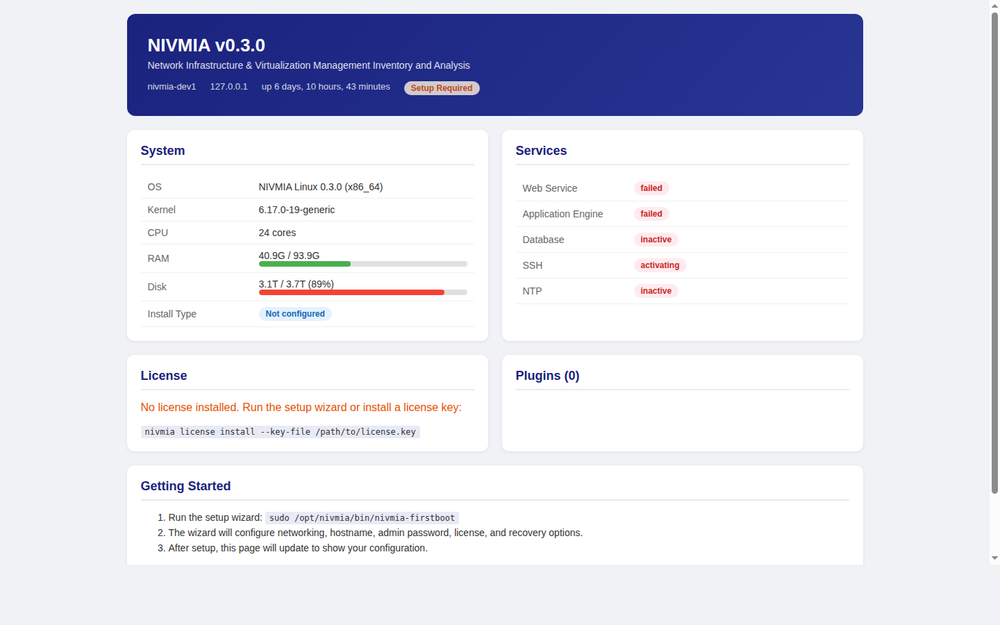

Forty switches from six vendors. One dashboard. NIVMIA watches your entire network — every switch, router, firewall, and access point — and tells you what's happening, what changed, and what's about to break. In plain language your whole team can understand.

NIVMIA appliance status dashboard — system health, services, license, and plugin status at a glance.
Your best network person is now managing a team — or running the integration for the company you just acquired. They don't have time to explain why VLAN 47 exists, why there's an odd static route on the core switch, or why certain ports are in trunk mode. The junior admin needs to learn fast. The intern needs to contribute by next month. And the network doesn't slow down while people ramp up.
Most network monitoring tools tell you what's happening right now. NIVMIA tells you what's happening, what changed since last week, why it was configured this way in the first place, and what's likely to need attention next month — so a new team member can come up to speed without blocking on the one person who remembers.
NIVMIA's built-in AI understands your network topology. Ask "which switches have firmware older than 6 months?" or "what changed on the TRENDnet switch last Tuesday?" and get an answer — not a log dump. It speaks your language because it's trained on your infrastructure.
A new network engineer can ask NIVMIA "why is this VLAN here?" and get context — when it was created, what it connects, which devices depend on it. The knowledge that used to live in one person's head now lives in the system, permanently.
NIVMIA compares tonight's configuration to last night's — and to the "golden" known-good configuration. If something changed that shouldn't have, you hear about it before a user does. If nothing changed but performance degraded, it correlates across devices to find the root cause.
Cisco, Juniper, Aruba, Arista, TP-Link, TRENDnet, D-Link, Netgear, Ubiquiti, Palo Alto, FortiGate, OPNsense, MokerLink, firewalld — 17 platforms, one consistent view. You don't need a different tool for each vendor. You need one tool that speaks all their languages.
Every device configuration is versioned — like a time machine for your network. Roll back to last Tuesday's config, diff between last month and today, tag a "golden" config as the known-good baseline. When something breaks, you know exactly what changed and when.
Need to prove your switches are hardened per company policy? NIVMIA checks firmware currency, error rates, spanning tree stability, port security, rogue DHCP servers, and health thresholds — automatically, nightly, with a report ready for the auditor.
Once installed, NIVMIA runs on a schedule — collecting, comparing, alerting, and recording. No human required for the nightly work.
Finds every device on your network, identifies its vendor and model, records its firmware version, maps its interfaces, and catalogs its VLANs. If a new device appears or an existing one goes dark, you know immediately.
CPU load, memory usage, temperature, uptime, interface error rates — collected per device, tracked over time. Thresholds are configurable: "alert me if any switch CPU exceeds 80% for more than 10 minutes."
Every device's running configuration is backed up to a versioned vault. Changes are diffed automatically. A "golden" baseline can be tagged. Any drift from the golden config triggers an alert.
Interface utilization, error rates, and health metrics are tracked over weeks and months. NIVMIA spots trends — "this uplink is growing 12% per quarter, you'll saturate it by November" — before they become emergencies.
Inventory reports, interface summaries, VLAN-to-device matrices, health overviews, collection audit trails. Export as table, JSON, or YAML. Every report is a query away, not a spreadsheet project.
Eight default alert rules ship out of the box — device unreachable, high CPU, high memory, high temperature, interface errors, interface down, link flap, bandwidth threshold. Alerts go to email, SMS, webhook, or your existing monitoring stack.
You don't have time to log into every switch weekly. You need something that watches the network for you, tells you when something needs attention, and doesn't require a networking certification to understand. NIVMIA's community tier is free, monitors 7 vendor platforms, and sends alerts in plain English.
Customer A runs Cisco. Customer B runs Ubiquiti. Customer C has a mix of TP-Link and D-Link they bought at different times. You don't want 30 different monitoring tools. NIVMIA's multi-site federation lets you manage them all from one central console, with per-customer isolation and per-customer reporting.
Whether it's PCI-DSS for your payment infrastructure, SOX for your financial controls, or HIPAA for patient data — the auditor wants proof, not promises. NIVMIA generates compliance reports showing firmware currency, hardening status, configuration drift, and security posture — automatically. When the auditor arrives, you hand them a report. When something drifts between audits, you know the same day it happens. Financial institutions running trading networks across multiple locations use this to prove every switch meets policy, continuously — not just on the day someone checks.
IoT sensors, building automation, IP cameras, badge readers — your network will grow faster than your headcount. NIVMIA scales to thousands of devices without additional staff because the nightly work is automated.
When quantum-safe encryption standards arrive, every device will need new credentials. NIVMIA's fleet management is designed for coordinated, cross-vendor key rotation — the kind of operation that breaks networks when done by hand.
Automated attack tools will probe for configuration weaknesses faster than humans can audit. NIVMIA's nightly drift detection and configuration vault create a continuous integrity check — catching changes that shouldn't have happened, even if the attacker was faster than your team.
Community tier: 7 vendor platforms, 10 devices, full monitoring — free with registration. Enterprise platforms (Cisco, Juniper, Palo Alto, FortiGate, Arista, Aruba, and more) available via monthly subscription.
View PricingNIVMIA makes it legible, auditable, and teachable — so the knowledge lives in the system, not in someone's head.
View Pricing Talk to Us